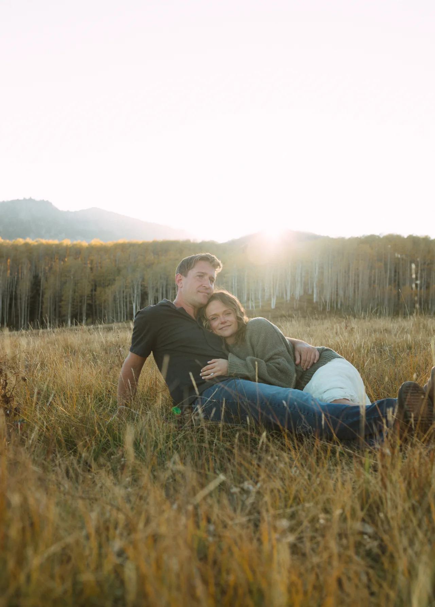
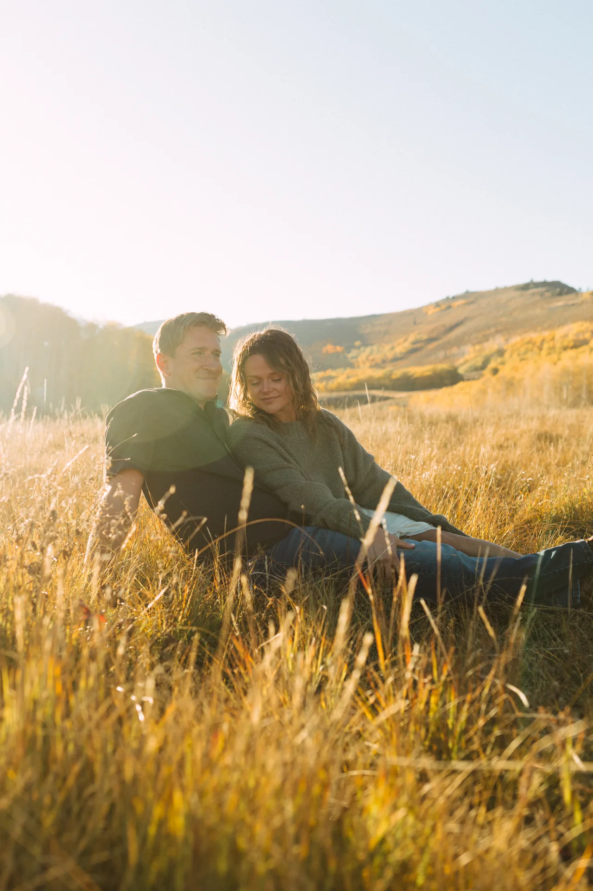
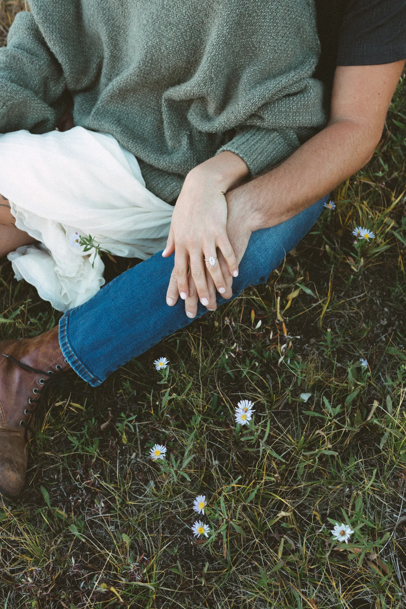
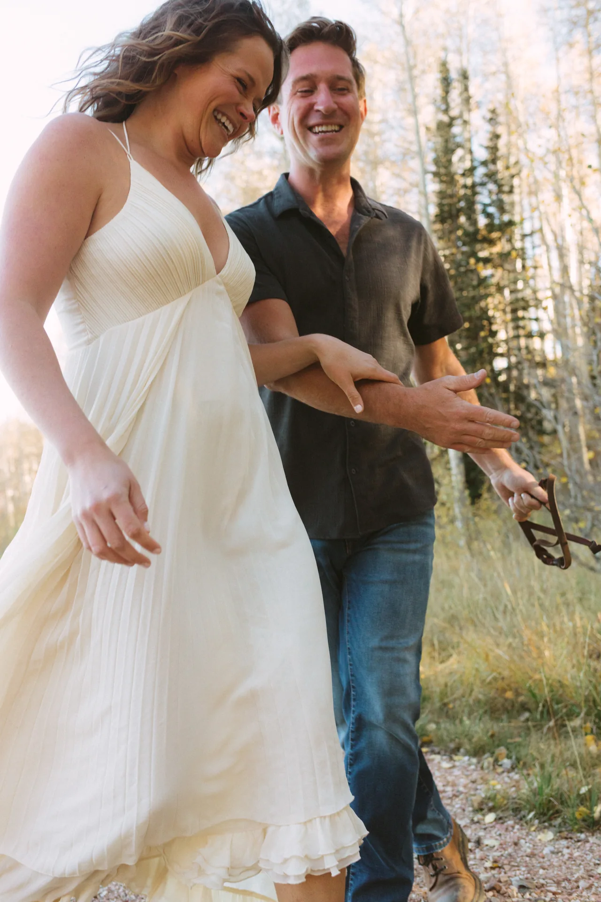
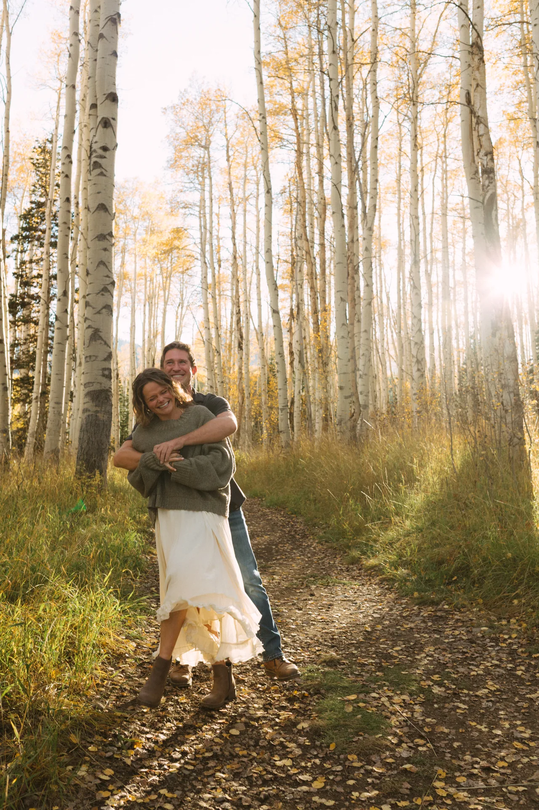

We’re getting married.
Save the datePaul&Audrey
- When
- September 25, 2027
- Where
- Salt Lake City
The two of us
More than adecade of us.
After more than ten years together, we’re getting married. We’d love for you to be there.


With love,
Paul & Audrey


Save the date
September 25, 2027Salt Lake City
September2027
Salt Lake City
A formal invitationwill follow.
Venue, timing, and travel details to come.
A little heads-up for us. Formal RSVPs will follow.
A few favorites